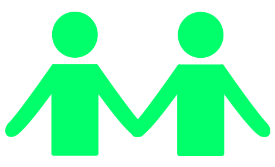

Comunidad

La razón principal de la creación de CLIPPED fue para crear una comunidad de estudiantes en donde puedan velar por la condición óptima de su universidad. Los grupos que se crean por universidad sirven para que los estudiantes expresar sus preocupaciones con la organización de su institución, y acompañado de el representante de CLIPPED, poder causar un cambio real en la experiencia universitaria. Para ser parte de una de las comunidades, puedes ver o preguntar aquí.